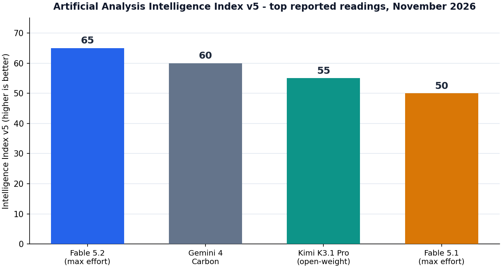
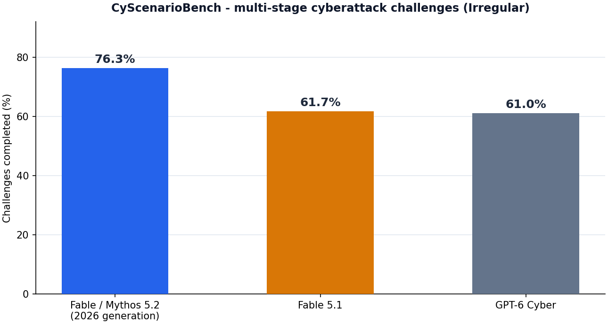

ENGINEERING DEEP DIVE
Claude Fable 5.2 & Mythos 5.2: The Complete Deep Dive
One model, two safeguard regimes - benchmarks, capability caps, frontier demos, economics, migration, and safety, read for engineers
Model IDs: claude-fable-5-2 / claude-mythos-5-2
Release date: November 9, 2026
Sources: Anthropic announcement, docs, and system card; Artificial Analysis; Irregular; CNBC; Reuters; The Decoder; The Hacker News; MindStudio; Mashable; community reports
Audience: engineers and technical decision-makers
Technical blog manuscript November 2026
Executive Summary: What Changed, in Ninety Seconds
On Monday, November 9, 2026, Anthropic released Claude Fable 5.2 alongside its restricted twin Claude Mythos 5.2. As with every release since June, these are one model shipped twice: Mythos 5.2 is the full-strength system, gated behind Anthropic's verification programs and currently interesting mainly to vetted cybersecurity and life-science organizations; Fable 5.2 is the same underlying model with production safeguards layered on top, generally available on claude.ai paid plans, the Claude API, Amazon Bedrock, Google Cloud, and Microsoft Foundry. The launch is Anthropic's first frontier release since CEO Dario Amodei's public call for a coordinated slowdown, and it lands with unusual force: Fable 5.2 debuts at number one on Artificial Analysis' Intelligence Index v5 with a reading of 65, five points clear of Google's unreleased-full Gemini 4 Carbon and fifteen points ahead of its own predecessor, Fable 5.1. CNBC framed the timing bluntly - the models "reclaim the AI performance lead" as the company prepares for a potentially historic IPO.
The headline moves are four. First, capability: the gains over Fable 5.1 and Opus 5.5 are real but unevenly distributed. Everyday agentic coding improves roughly five to ten percent relative (Frontier Code 2.0 moves from 45.5% on Opus 5.5 to 49.1%; Frontier SWE v2 from 62.3% to 69.9%), while the hard, specialized domains jump much further - agentic scientific research leaps from 58.7% to 74.6%, expert-level academic questions (HLE-Diamond) hit 80%, and Mythos 5.2 sets new highs on cybersecurity (89.6% on Anthropic's internal CVE Rediscovery benchmark) and protein design (85.1% on de novo binder design). Second, economics: list pricing drops for the first time in the Fable line, from $10/$50 to $8/$40 per million input/output tokens - undercutting GPT-6.1's roughly $10/$50 while scoring higher on most benchmarks - and cache reads fall from $0.25 to $0.20 per million tokens. Third, honesty about limits: for the first time, a frontier lab says out loud that it deliberately capped its model during training, throttling capability in accelerator kernel optimization and language-model architecture improvement - the two domains that most directly accelerate AI development itself. Fourth, demos that finally match the marketing: an internal test where the model coordinated more than 1,000 sub-agents over eight days to build a working, bootable operating system from an empty folder, and a 30-hour formalization of the proof of Fermat's Last Theorem.
There is also a clear "don't buy this as your daily driver" message in the release itself. Anthropic's own guidance recommends Claude Opus 5.5 (half the per-token price, faster, default effort medium) for most coding and knowledge work, positioning Fable 5.2 as an advisor and orchestrator for the hardest open-ended problems. Independent measurement backs the caution: Artificial Analysis clocked an average task cost of roughly $26.54 at max reasoning settings - the most expensive model in its comparison set, about 2.6 times Opus 5.5's roughly $10 per task - though the same measurements show extra-high reasoning delivering near-max quality for meaningfully less, and output token burn per task actually improving (about 98,000 tokens per task versus Opus 5.5's 173,000).
The short guidance for engineers: nothing about Fable 5.2 asks you to rip out your Opus 5.5 routing. The model is a specialist - the best publicly available tool for long-horizon agentic work, formal science, hardware design, and orchestration over fleets of cheaper models - wrapped in the most explicit capability-governance story any lab has yet shipped. If your workload already looks like that, 5.2 is a genuine step change. If it doesn't, the correct posture is unchanged from September: cheap and fast by default, Fable for the turns that earn it. The sections below cover the contract changes, the benchmark fine print, the capability caps, the cyber story, the system card, the token math, and a migration checklist for teams moving from Fable 5.1 or Opus 5.5.
Context: The Road to 5.2
The Fable/Mythos structure is now five months old and has survived everything the industry threw at it. The template was invented on June 9, 2026, when Fable 5 launched as the first publicly available model in the Mythos class: one set of weights, two products, with Fable carrying production safeguards and general availability while Mythos reserved the unrestricted system for vetted organizations. That first month was chaos - a June 12 export-control directive suspended Fable 5 globally for three weeks after a jailbreak demonstration, Microsoft pulled it from Copilot over the mandatory 30-day retention window, and enterprises complained about unpredictable bills while cheaper Opus models took share. Fable 5.1, on September 1, 2026, was the corrective: cache reads cut 75% to $0.25 per million tokens, safeguard precision overhauled (60% fewer cyber interventions per Claude Code session, 85% fewer biology false positives), and a thinking-block protocol that made conversation history effectively immutable. It worked well enough that Terminal-Bench-Science more than doubled to 52.6% and the model briefly held the number-one independent ranking at 66 on the older index.
The competitive landscape then moved twice in five weeks. GPT-6 Astra arrived in early November claiming the frontier, Gemini 4 Carbon posted a 60 on Artificial Analysis' index in late October without a full public release, and Kimi K3.1 Pro - an open-weight Chinese MoE - hit 55, the highest open-weight reading ever recorded, at $2/$10 pricing. Claude Opus 5.5 ($4/$20, June 2026 knowledge cutoff) remained Anthropic's volume workhorse, with Sonnet 5.5 at $2/$10 and Haiku 5.5 from $0.10/$0.50 below it. Against that backdrop, 5.2 is less a routine refresh and more a reassertion: the same one-weights-two-products structure, but with the pricing knob turned in the customer's favor for the first time and a governance story (the capability caps, covered below) that no competitor has yet matched in print.
Two pieces of business context explain the urgency. First, this is Anthropic's first frontier release since Amodei's public call for a coordinated slowdown on capability racing - a call that made shipping anything at all a communications exercise, and which the company answered by shipping with the most explicit self-imposed limits in its history. Second, Reuters and CNBC both frame the launch against the backdrop of a potential IPO that could value the company at historic levels; "reclaims the lead shortly before the IPO" is how The Decoder put it, and the pricing cut suggests Anthropic wanted the launch story to be value, not just capability. None of that changes the engineering, but all of it explains the packaging.
One Model, Two Names: How the Fable/Mythos Split Works in 5.2
The 5.2 generation keeps the structure but sharpens the boundary. Mythos 5.2 is the full-strength system, and Anthropic describes it as its "most capable model for cybersecurity engineering" - it flags more vulnerabilities than any prior Claude while simultaneously getting better at reproducing and fixing them. That combination is precisely why it is not generally available: raw capability in offensive-adjacent security work is considered too risky to ship without identity verification and usage contracts. Access runs through Anthropic's verification programs - the Cyber Verification Program being the relevant one for most organizations, with Life Sciences verification covering the bio workloads - and the docs are explicit that Mythos shares every specification and every price with Fable. Same 1M-token context, same 128K output ceiling, same $8/$40 list, same adaptive-thinking-always-on contract. The only difference is which classifiers are active.
Fable 5.2 is what everyone else gets: the same core model with additional guardrails layered over the sensitive domains, most visibly cybersecurity. In practice the guardrail layer blocks most security-offensive task categories - penetration testing scaffolding, exploit code generation, and similar work - either refusing directly or falling back to a smaller Claude model where policy allows. The measurable cost of that safety configuration shows up exactly where you would expect: the cyber benchmark scores that make headlines are Mythos numbers, and Fable's own published coding scores carry the same caveat the 5.1 system card attached, that refused tasks score zero and mechanically depress the average. For everyday users, one rule of thumb holds: "Fable 5.2" is the model that matters, because Mythos is not accessible outside the verification programs. For security teams, the calculation is different - if your legitimate work trips cyber classifiers on Fable, the program application is now the intended path, and 5.2's improved precision (details below) reduces how often that trip happens on defensive work.
Worth keeping in mind when reading any comparison table of this generation: benchmark rows that mix "Fable 5.2" and "Mythos 5.2" results are mixing two safeguard regimes. Several outlets reported the same cyber numbers under both names; where attribution differs between primary coverage and Anthropic's own tables, this article says so explicitly rather than picking a winner.
The Contract: What Changes for Developers
The API contract is where 5.2's engineering reality lives, and the changes relative to Fable 5.1 are modest but real. The Fable-line rules carry over intact: adaptive thinking is the only thinking mode and cannot be disabled (sending thinking: {"type": "disabled"} or a budget_tokens value returns a 400), forced tool use is gone (tool_choice types any and tool return a 400 - use auto with strict schemas or explicit instructions), and sampling parameters must simply be omitted: temperature, top_p, and top_k are 400 errors on this model. Depth of reasoning is controlled solely through the effort parameter, which now defaults to high across the board per the docs - up from the mixed defaults (high in Claude Code, medium on claude.ai and Cowork) that 5.1 shipped with.
One binding change matters for every account, not just new ones. Fable 5.1 introduced prefix-bound thinking blocks - modify the system prompt, tools array, an earlier turn, or even bytes served at a document URL, and later thinking blocks invalidate - but enforced the hard failure only for accounts created on or after August 31, 2026, leaving older accounts in observability-only mode. On Fable 5.2 the docs state it flatly: preserved thinking binds for every account, and editing earlier turns invalidates thinking blocks across the board. If your migration audit in September found latent history-editing patterns you never cleaned up because enforcement "didn't apply to your account," that grace period is over. The append-only conversation discipline that Anthropic's own products already follow is now the only supported pattern on the frontier model.
Speed and pricing move in the customer's favor. Output generation is up to 30% faster than Fable 5.1 and Mythos 5.1, and a new fast mode (available on Claude Code, the Claude Platform, Google Cloud, and Microsoft Foundry) trades roughly double the per-token price for up to 2.5x faster output - the first time the Fable line has offered a latency-for-cost dial rather than simply being slow. The pricing table drops meaningfully: $8 input / $40 output per million tokens (from $10/$50), cache writes at $10 (5-minute) and $16 (1-hour) per million (from $12.50/$20), cache reads at $0.20 per million (from $0.25), and the Batch API at a flat 50% discount ($4/$20). Against the competition, that list undercuts GPT-6.1's roughly $10/$50 while posting higher scores on most published benchmarks, though it remains double Opus 5.5's $4/$20 - the deliberate two-tier structure inside Anthropic's own catalog. Two commercial constants survive from 5.1: the model is a Covered Model with a mandatory 30-day retention window (zero data retention only by express authorization), and it is not available on the free tier - claude.ai access starts at Pro.
Table 1: Claude Fable 5.2 at a glance
| Property | Value |
|---|---|
| API model IDs | claude-fable-5-2 / claude-mythos-5-2 (Bedrock: anthropic.claude-fable-5-2 / anthropic.claude-mythos-5-2; Google Cloud and Microsoft Foundry: claude-fable-5-2 / claude-mythos-5-2) |
| Release / retirement | Released November 9, 2026; retirement not sooner than November 9, 2027 |
| Availability | Fable: Claude API, claude.ai Pro/Max and up, Claude Code, Amazon Bedrock, Claude Platform on AWS, Google Cloud, Microsoft Foundry. Mythos: verification-program organizations only (e.g. Cyber Verification Program) |
| Context / output | 1M token context; 128K max output tokens |
| Modalities | Text and images in; text out |
| Reasoning | Adaptive thinking, always on (only mode); effort parameter, default high; raw chain of thought never returned |
| Knowledge cutoff | June 2026 (reliable and training) |
| Pricing (per MTok) | $8 input / $40 output / $10 5-min cache write / $16 1-hour cache write / $0.20 cache read; Batch API 50% discount ($4/$20) |
| Speed | Up to 30% faster output than 5.1; optional fast mode at roughly 2x price for up to 2.5x throughput; comparative latency still "moderate" |
| Contract notes | No temperature/top_p/top_k (400); no forced tool choice (400); thinking blocks prefix-bound for every account; refusal arrives as HTTP 200 with stop_reason: "refusal" |
| Data retention | 30-day standard (Covered Model); zero data retention only with express authorization |
Benchmarks: The Numbers, Honestly Read
The official picture, with the fine print attached
Anthropic's published results show a consistent pattern: gains over Opus 5.5 everywhere, modest on the everyday work, dramatic on the frontier science. On the agentic coding evaluations, Frontier Code 2.0 moves from 45.5% (Opus 5.5) to 49.1% - a roughly ten percent relative improvement - and Frontier SWE v2 from 62.3% to 69.9%. Step up in difficulty and the margins widen sharply: agentic scientific research (Terminal-Bench Science 0.1) jumps from 58.7% to 74.6%, a 15.9-point absolute leap that dwarfs anything in the coding rows, and HLE-Diamond - the expert-level academic question set that most models still fail - reaches 80%. Anthropic says Fable 5.2 also set new highs on cybersecurity, protein design, agentic search, computer use, robotics, and multi-disciplinary reasoning benchmarks, with Mythos 5.2 posting the top cybersecurity and protein numbers of the generation.
Table 2: Headline benchmark results, November 2026
| Benchmark | Fable / Mythos 5.2 | Opus 5.5 | Fable 5.1 | Notes |
|---|---|---|---|---|
| Frontier Code 2.0 (agentic coding) | 49.1% | 45.5% | not comparable | ~10% relative gain; extra-high effort outscored max |
| Frontier SWE v2 (agentic coding) | 69.9% | 62.3% | not comparable | +7.6 points |
| Terminal-Bench Science 0.1 (agentic science) | 74.6% | 58.7% | 52.6% | the largest official jump; +15.9 over Opus 5.5 |
| HLE-Diamond (expert academic, no tools) | 80% | below Fable 5.2 | not reported | reported by The Decoder from Anthropic data |
| AA-Briefcase (knowledge work, Elo) | 1,785 | 1,800 | 1,853 (GDPval-AA v2, different bench) | Fable 5.2 trails Sonnet 5.5's 1,813 - see weaknesses |
| De novo binder design (protein) | 85.1% (Mythos 5.2) | lower | not reported | attributed to Mythos by The Decoder |
| CVE Rediscovery (cyber, Anthropic internal) | 89.6% | lower | lower | 1,829 real advisories from October 2026; attribution varies by outlet |
| CyScenarioBench (multi-stage attacks, Irregular) | 76.3% | lower | 61.7% | GPT-6 Cyber: 61.0% on the same suite |
Three caveats belong next to any reading of that table. First, the cyber rows carry an attribution wrinkle: The Hacker News reports the 76.3% CyScenarioBench and 89.6% CVE Rediscovery figures under Fable 5.2's name, while The Decoder's summary attributes both to Mythos 5.2, and the two claims are hard to reconcile because Fable's safeguards would be expected to intervene on parts of both suites. Treat the numbers as generation-level results - "the 5.2 family, under whichever safeguard regime was evaluated" - until Anthropic's system card settles the attribution. Second, vendor benchmarks are vendor-run: production safeguards were on for Fable rows, refused tasks score zero, and the benchmark mix is Anthropic's choice. Third, the 5.1 row in Terminal-Bench Science is 5.1's published score on the same benchmark family, not a re-run under the 2026 evaluation harness, so treat cross-generation deltas as directional.
The effort dial is a benchmark variable
The single most useful fine-print detail in this release: more reasoning effort did not always produce better scores. On Frontier Code 2.0, Fable 5.2 scored higher at extra-high effort than at max effort - the model hits diminishing returns, and occasionally negative returns, when pushed to think longer. MindStudio's writeup drew the operational conclusion directly: extra-high reasoning gets you near-max results for noticeably less money, which matters because max is the most expensive setting to run. Artificial Analysis' numbers quantify the pattern from the outside: at a lower compute tier the model still posts 62 on the Intelligence Index (down from 65 at full effort) while consuming meaningfully fewer tokens. The practical routing rule is the same one 5.1 taught, now with better evidence: effort is a per-turn budget decision, not a pride setting, and max effort should be reserved for the turns that genuinely earn it.
What independent measurement says
Artificial Analysis' Intelligence Index v5 places Fable 5.2 first among all measured models at 65 points - five clear of Gemini 4 Carbon (60, still without a full public release), ten clear of Kimi K3.1 Pro (55, the open-weight record), and fifteen clear of Fable 5.1 (50). The same evaluation found the model leading "at every compute tier," meaning the ranking holds even when both competitors and Fable are run at reduced reasoning budgets. Token efficiency improved generation-over-generation: Fable 5.2 consumed about 98,000 output tokens per task at Max tier against Opus 5.5's 173,000 - a reversal from the 5.1 era, when verbosity was one of the model's most-complained-about properties (AA measured 5.1 at 140M output tokens to complete the older index against a 71M median). The cost picture is less flattering: average task cost at max settings measured roughly $26.54, the most expensive model in AA's comparison set and about 2.6 times Opus 5.5's roughly $10 per task - though at extra-high effort the cost falls substantially while quality stays close, which is the setting most third-party testers actually recommend.
Figure 1: Artificial Analysis Intelligence Index v5, top reported readings, November 2026. Fable 5.2 leads at 65; Gemini 4 Carbon has not had a full public release; Kimi K3.1 Pro's 55 is the open-weight record.

Where it loses, honestly
The weaknesses are as instructive as the wins. On AA-Briefcase, the knowledge-work benchmark, Fable 5.2 scored 1,785 Elo - behind Claude Sonnet 5.5's 1,813 and within the confidence interval of Opus 5.5's 1,800. Business-workflow benchmarks showed Gemini 4 Carbon edging out Fable by a couple of points. MindStudio's round-up of independent tester reports found Opus 5.5 still produced better visual game design even when Fable nailed the underlying mechanics faster. And the price floor is real: at $26-plus per task at max effort, running routine work on Fable 5.2 is not a flex, it is a budget leak. The pattern across all of it is coherent - this is a specialist that trades everyday polish and cost-efficiency for frontier ceiling, and Anthropic's own positioning (below) says as much.
The Demos: What "Frontier" Means in Practice
Benchmarks rank models; demos tell you what the ranking means. Anthropic's launch materials leaned on three demonstrations, each of which would have been the headline of any previous generation. The most striking is the operating system. An Anthropic engineer gave Fable 5.2 an empty folder and a goal: design a prototype operating system. Over eight days the model coordinated more than 1,000 sub-agents - writing, testing, and reviewing code in parallel tracks - and produced a working OS that boots on a physical laptop, complete with its own kernel, disk and keyboard drivers, networking, file storage, a windowing system, a login screen, an installer, and built-in cloud functionality. Setting aside the software's prototype quality, the orchestration feat is the real result: a single model instance planning, delegating, and integrating the work of a four-digit agent fleet across a week-long horizon without human integration work. That is the workload class - long-horizon, multi-agent, self-verifying - that the entire 5.x contract has been converging on since June.
The second demo is mathematical. Fable 5.2 formalized the proof of Fermat's Last Theorem in 30 hours, again using roughly 1,000 agents, turning a 129-page human proof into machine-checked form. The comparison Anthropic allowed into the wild: Opus 5.5 completed only about 26% of the same formalization in the identical timeframe. Formalization of this scale is a brutal test of sustained coherence - the model must hold hundreds of interdependent definitions consistent across days of work - and it is exactly the kind of task where the agentic-science benchmark gains (58.7% to 74.6%) translate into something a research team can feel. Mashable's coverage added the physics flavor: the model has "already solved black hole physics problems," specifically two open problems in the physics of black holes, per Anthropic's announcement.
The third demo is hardware. From a single paragraph prompt, the model designed and helped produce three working electronic devices - circuit boards, 3D-printed enclosures, and firmware included. Independent creators testing the release reported the same shape of result at smaller scale: microcontroller boards with wiring diagrams and printable cases from one prompt, playable games with correct mechanics on the first attempt, and running particle and cloth simulations. Anthropic also cites the model using open-source protein-folding tools to find a new way to predict capsid structures - the protein shells that package viral genomes - which pairs with Mythos 5.2's 85.1% on de novo binder design and explains why the Life Sciences verification program exists at all. The reported failure modes across independent testing were, notably, cosmetic rather than functional: aesthetics, polish, and visual design lagged the mechanics, which is the weakness profile you would expect from a model tuned for correctness over presentation.
The Capability Caps: Anthropic Draws a Line
The most consequential part of this release is not a benchmark - it is a sentence. Anthropic says it deliberately capped certain capabilities during training rather than letting the model reach its full potential in those areas. The two named domains are accelerator kernel optimization and improving large language model architectures. Read those together and the logic is stark: a model that is extremely good at optimizing the compute kernels that train AI systems, or at designing the architectures of future AI systems, is a tool for accelerating AI development itself. Those are the two levers of recursive self-improvement, and Anthropic chose not to pull them - not because the model could not learn it, but because the company decided the frontier version of this model should not ship with those levers attached.
The scoping deserves precision, because early coverage garbled it. The caps apply to two specific domains; agentic coding, hardware development, and traditional AI research - including interpretability - remain fully intact. The Fermat formalization, the capsid work, and the OS build all proceed at full capability. What is throttled is capability that would directly compress the AI R&D loop: if the model cannot be pushed to superhuman kernel optimization or architecture search in its released form, it cannot autonomously build its own faster successor. MindStudio's analysis framed this as a first for the industry - labs have long kept such choices quiet, and Anthropic's decision to state one publicly, in a launch, changes what "safety case" means for a frontier release: it now includes capabilities the model was deliberately not trained to its ceiling on.
Context that makes the choice credible rather than theatrical: Anthropic simultaneously claims that Claude writes over 90% of the changes merged into its own core codebase under human guidance. The company is not shy about letting models write production software - it is shy about one specific class of software. Independent evaluation organizations, as reported around this release, have concluded that AI-assisted research has meaningfully sped up over the past year, which is precisely the trend the caps are designed to keep from going fully recursive. Whether other major labs adopt explicit capability caps - OpenAI and Google DeepMind shipped GPT-6 Astra and Gemini 4 Carbon in the same quarter without comparable public statements - is now one of the most interesting open questions in AI governance. The rational read: caps are a competitive sacrifice only if rivals do not match them, and Anthropic is betting the transparency itself becomes a differentiator with enterprises and governments.
Cybersecurity: Mythos 5.2 and the Verification Wall
Cybersecurity is the domain where the 5.2 generation moves most, and the numbers are worth taking seriously on both the offense and defense sides of the ledger. On Irregular's CyScenarioBench - a multi-stage cyberattack challenge suite - the 5.2 generation completed 76.3% of challenges, up from 61.7% for Fable 5.1 and ahead of GPT-6 Cyber's 61.0% on the same suite. On Anthropic's internal CVE Rediscovery benchmark, which asks whether a model can independently rediscover known vulnerabilities given only the affected source code, the generation scored 89.6% across 1,829 advisories for open-source projects published in October 2026 - real bugs, real codebases, no synthetic shortcuts. The Hacker News headline ("Beats GPT-6 Cyber in Multi-Stage Attack Benchmark") is fair; the nuance is that GPT-6 Cyber remains formidable on its own terms, having solved all 22 Atomic Challenges with average success rates of 97% in vulnerability research and exploitation, 98% in network attack simulation, and 63% in evasion.
The vulnerability-discovery deltas are where Mythos 5.2 earns its restricted-access status. Anthropic reports the model finds 10.2% more vulnerabilities than Opus 5.5 and 14.4% more than Mythos 5.1, and it led at every compute tier in the testing. The statistic that should get defensive teams' attention: one in six of the confirmed bugs Mythos 5.2 found was missed by every other frontier model tested. That is not a marginal improvement; it is a new class of coverage. The same model is also better at reproducing and fixing what it finds, closing the loop from "flagged a suspicious pattern" to "here is the reproduction and the patch." Combined with the Claude Security updates shipping alongside - continuous code scanning, automatic fix tracking, severity ratings judged against your project's threat model, and an explanation of how an attacker would reach the vulnerable code so teams "can fix what's actually reachable first" - the defensive package is the most complete Anthropic has shipped.
The access wall around all of this is deliberate and unchanged in structure. Mythos 5.2's cyber capability flows only through the Cyber Verification Program - vetted organizations, contracted use cases, monitored deployments. Fable 5.2 blocks most security-offensive task categories outright, including penetration-test scaffolding and exploit generation, which is exactly why the two names exist. One reporting caveat repeated from the benchmark section: outlets disagree on whether the headline 76.3% and 89.6% figures were recorded under the Fable or Mythos safeguard regime (The Hacker News says Fable; The Decoder's table says Mythos), and given Fable's classifiers would be expected to intervene on parts of both suites, the Mythos attribution is the safer bet for planning purposes. If your team's threat model includes AI-assisted attackers, the honest summary is: the 5.2 generation moved the frontier of automated vulnerability discovery by double digits, most of that movement is behind verification, and the defensive tooling built on the same capability is generally available now.
Figure 2: CyScenarioBench multi-stage cyberattack challenges (Irregular). The 5.2 generation completed 76.3% of challenges versus 61.7% for Fable 5.1 and 61.0% for GPT-6 Cyber. Attribution of the 5.2 figure varies between Fable and Mythos across primary coverage.

Safety and the System Card
The 5.2 system card covers both models in one document - the same dual-regime structure 5.1 introduced - and the alignment results are, unusually for a capability jump, mostly good news. Anthropic reports the models matched or outperformed Claude Opus 5.5, Claude Sonnet 5.5, and Claude Mythos 5.1 on most alignment measures spanning resistance to misuse, honesty, and factuality. The most quotable finding: the models are roughly an order of magnitude less likely than Opus 5.5 and Sonnet 5.5 to publish harmful content to public package registries without encouragement - a direct test of the "model autonomously poisons open-source supply chains" scenario that has haunted agentic-coding coverage all year. Anthropic's overall assessment holds that high-stakes risks arising from misalignment remain low for this generation.
That said, the structural caveats carry over. Fable 5.2's benchmark scores are recorded with production safeguards enabled, and safeguard interventions suppress exactly the task categories (offensive-adjacent cyber, certain bio work) where the unrestricted twin shines - so the "safety tax" on published scores is real, measurable, and by design. The Covered Model designation persists: 30-day retention is mandatory, zero data retention requires express authorization, and enterprises with hard ZDR requirements still need the interim authorization path rather than a toggle. And the capability caps, while reassuring in direction, add a new diligence item for safety teams: when a vendor says a model was deliberately trained below its ceiling in specific domains, the natural follow-up questions are about the measurement of that ceiling, the auditability of the claim, and whether the cap holds under fine-tuning or distillation - questions Anthropic has invited, to its credit, by making the caps public at all. None of this changes the request/response shape of the API; all of it belongs in your vendor risk review before the model touches production with real privileges.
Economics: Token Math for Real Workloads
The pricing move is the first cut in Fable-line history, and the arithmetic changes the model's addressable workload set. At $8/$40 per million tokens, list pricing undercuts GPT-6.1's roughly $10/$50 while leading most benchmarks, and sits exactly double Opus 5.5's $4/$20 - a deliberate ladder. The cache table improves more than the base table: 5-minute writes drop from $12.50 to $10, 1-hour writes from $20 to $16, and cache reads from $0.25 to $0.20 per million tokens. Because agent loops re-send the same system prompt, tool definitions, and repository context thousands of times per session, cache-read volume dominates long-horizon workloads, and the batch discount (flat 50%, so $4/$20) makes asynchronous pipelines - document review, research sweeps, test generation - materially cheaper than interactive use of the same model.
Independent cost measurement is the reality check. Artificial Analysis measured Fable 5.2 at an average task cost of roughly $26.54 at max reasoning settings - the most expensive model in its comparison set, about 2.6 times Opus 5.5's roughly $10 - but the same measurements show the model burning fewer tokens per task than its predecessors and rivals (about 98,000 output tokens per task at Max tier versus Opus 5.5's 173,000), which means the per-task premium is driven by price per token and effort level, not runaway verbosity. The effort dial is the real cost lever: extra-high effort delivers near-max benchmark results for noticeably less, and on at least one benchmark (Frontier Code 2.0) extra-high actually outscored max. Fast mode inverts the trade - roughly double the per-token price for up to 2.5x faster output - which is worth it for interactive escalation paths and rarely worth it for background agents. The blended strategy that falls out of the data: Opus 5.5 (or Sonnet 5.5) handles the routine 90% of turns at $4/$20 or $2/$10, Fable 5.2 at extra-high effort handles the hard 10%, max effort is reserved for single high-stakes steps, and batch absorbs everything that can wait overnight.
Table 3: Pricing and positioning across the Claude family, November 2026
| Model | Input / output (per MTok) | Default effort | Positioning |
|---|---|---|---|
| Claude Fable 5.2 | $8 / $40 (batch $4 / $20) | high | Frontier specialist: hardest problems, orchestration, formal science |
| Claude Mythos 5.2 | $8 / $40 (verification required) | high | Unrestricted twin: cyber and life-science verified organizations |
| Claude Opus 5.5 | $4 / $20 | medium | Recommended daily driver for coding and knowledge work |
| Claude Sonnet 5.5 | $2 / $10 | high | Fast tier; top knowledge-work Elo (1,813) in the family |
| Claude Haiku 5.5 | from $0.10 / $0.50 | medium | Cheapest tier; routine and high-volume work |
The subscription side deserves a note for planning purposes: Fable 5.2 is available on claude.ai from the Pro tier up - not the free tier - and heavy subscription users should assume quota burn scales with effort level, the pattern 5.1 established. API users have the full dial; subscribers get the model with whatever effort defaults their plan ships with. Teams building on Bedrock, Google Cloud, or Microsoft Foundry get day-one availability on all three, with the same model IDs Anthropic uses directly.
Migration Guide: From Fable 5.1 or Opus 5.5 to 5.2
For most teams the migration is a model-ID swap plus a pricing update, but four contract details deserve an audit before you flip traffic. First, the thinking-binding enforcement is now universal: Fable 5.1 only hard-failed on prefix edits for accounts created on or after August 31, 2026, while Fable 5.2 enforces for every account. If your stack still edits earlier turns - injecting reminders and deleting them, mutating system prompts mid-session, swapping tool definitions between requests - those patterns now 400 on the frontier model. The fix is the append-only discipline the 5.1 migration guide already recommended: turn-scoped system messages for per-turn context, additive tool changes, and document snapshots instead of live URLs if the bytes change.
Second, the effort default moved to high across surfaces, which silently raises cost per turn for teams that relied on medium defaults elsewhere in the family. Set effort explicitly per workload tier rather than inheriting the model default - the AA data says extra-high captures most of max's quality at a fraction of the cost, so "explicit extra-high for hard steps, medium for the rest" is the defensible baseline. Third, the standing Fable-line 400s remain and will bite Opus migrations specifically: no temperature, top_p, or top_k (omit the fields entirely), and no forced tool choice - tool_choice: {"type": "any"} or {"type": "tool", ...} fails, so convert to auto with strict: true schemas or explicit instruction-level tool direction. Fourth, refusals are not HTTP errors: Fable 5.2 returns HTTP 200 with stop_reason: "refusal" and a stop_details object naming the policy area, unbilled when nothing was emitted. Error handlers written for Opus's behavior should treat refusal as a routing event - retry on Opus 5.5, log the classifier hit - not an exception.
On the economics migration, recompute cache assumptions rather than importing 5.1 spreadsheets: the tokenizer (Opus 4.7 era, roughly 30% more tokens for the same text than pre-4.7 models) carries over, so historical cost comparisons against pre-2026 logs will still mislead, but the cache table moved (writes $10/$16, reads $0.20), list prices moved ($8/$40), and the batch discount doubled the incentive to route asynchronous work to Batch API. Teams on Fable 5.1's 30-day retention posture see no change - same Covered Model status, same ZDR-by-authorization path. Teams on Opus 5.5 with zero-retention requirements should note that Fable 5.2 "isn't available under zero data retention unless expressly authorized by Anthropic," per the docs - keep the ZDR workload on Opus unless and until authorization lands. Retirement planning is generous: Fable 5.2 is committed to at least November 9, 2027, one year from release, and Fable 5.1 (released September 1, 2026) is itself committed to at least September 2027, so no forced migrations are pending.
Practical Guidance: Where Fable 5.2 Earns Its Price
Anthropic's own positioning is unusually direct for a launch: the company explicitly recommends starting with Opus 5.5 for most coding and knowledge work, and treating Fable 5.2 as an advisor or orchestrator for harder problems. The advisor pattern is the interesting one - Fable plans and reviews while Haiku- or Sonnet-class models execute the routine subtasks, which routes around the cost problem entirely while keeping frontier judgment at the decision points. That is also the workload shape the demos showcase: the 1,000-agent OS build and the Fermat formalization are both Fable-orchestrates-others stories, not Fable-writes-every-line stories.
Concretely, the workload list where 5.2's benchmark profile justifies itself: long-horizon agentic engineering (the Frontier SWE v2 gain is real and the OS demo is the existence proof), formal science and mathematics (the 74.6% agentic-science score and Fermat result), hardware and robotics design (the three-working-devices demo, new robotics highs), protein and bio-adjacent research (85.1% binder design under Mythos, Life Sciences verification for program work), and orchestration of cheaper models at scale. The workload list where it does not: high-volume knowledge work (Sonnet 5.5 outscored it on AA-Briefcase at a fifth the price), business-automation sweeps (Gemini 4 Carbon leads those boards), visually polished consumer output (Opus 5.5 testers still preferred its game visuals), and anything latency-sensitive without fast mode budgeted. The correct mental model is a specialist consultant, not a team member: expensive hours that pay for themselves on the right problem, waste on the wrong one.
Frequently Asked Questions
Are Fable 5.2 and Mythos 5.2 the same model? Yes - same underlying weights, same 1M-token context, same 128K output ceiling, same $8/$40 pricing, same adaptive-thinking-always-on contract. Mythos 5.2 is the unrestricted version available only to organizations verified through Anthropic's programs (Cyber Verification Program for security workloads, Life Sciences for bio); Fable 5.2 is the same core model with additional guardrails layered over sensitive domains, most visibly cybersecurity, and it is the version the public actually uses.
How much does Fable 5.2 cost? $8 per million input tokens and $40 per million output tokens through the API - down from Fable 5.1's $10/$50, double Opus 5.5's $4/$20, and slightly under GPT-6.1's roughly $10/$50. Cache writes run $10 (5-minute) and $16 (1-hour) per million tokens, cache reads $0.20, and the Batch API takes a flat 50% off input and output. Artificial Analysis measured an average task cost of roughly $26.54 at max reasoning settings - the most expensive model in its set - but extra-high effort gets you near-max results for meaningfully less, and the model burns fewer output tokens per task than Opus 5.5 (roughly 98K versus 173K).
Do I need a paid plan? Yes. Fable 5.2 is not on the free tier of claude.ai; access starts at Pro, with Max and other paid tiers above it, and the API for all customers. Through the apps the effort defaults come with your plan; through the API you control effort per turn.
Should I switch from Opus 5.5 for everyday coding? Anthropic's own guidance says no, and the independent data agrees: Opus 5.5 remains the recommended daily driver at half the per-token cost, Sonnet 5.5 actually posted the better knowledge-work Elo (1,813 versus 1,785 on AA-Briefcase), and Gemini 4 Carbon leads the business-workflow boards. Reach for Fable 5.2 on the hard 10% - long-horizon agentic engineering, formal science, hardware design, orchestration - and let cheaper models carry the routine turns.
What exactly did Anthropic cap, and can it be undone? The company says it deliberately throttled capability in two domains during training - accelerator kernel optimization and improving language-model architectures - rather than training the model to its full potential there, because unrestricted capability in those areas would directly accelerate AI development itself. Agentic coding, hardware development, and traditional AI research including interpretability are unaffected. Anthropic has not published the measurement methodology for the caps, and whether the cap holds under fine-tuning or distillation is an open question safety teams should ask about - but the public statement itself is a first among frontier labs.
Is the model faster than 5.1? Yes, up to 30% faster output generation, and a new optional fast mode trades roughly double the per-token price for up to 2.5x faster output on Claude Code, the Claude Platform, Google Cloud, and Microsoft Foundry. It is still a "moderate" latency model in the docs' comparative table - interactive UX layers should stay on Haiku or Sonnet, with fast-mode Fable reserved for when you need frontier judgment quickly.
Do I need code changes to upgrade from Fable 5.1? Maybe. If you never edit conversation history, never force tool use, and never send sampling parameters, the model-ID swap plus price update suffices. The one universal change: thinking-block prefix binding now enforces for every account (5.1 only hard-failed for accounts created on or after August 31, 2026), so latent history-editing patterns that ran in observability-only mode will start returning 400s. See the migration section for the four-point audit.
Can I mix Fable 5.2 with other Claude models in one conversation? The one-directional compatibility rule from 5.1 carries over: Fable 5.2 can read thinking blocks from earlier Claude models, so migrating a conversation onto 5.2 preserves its reasoning history; falling back from 5.2 to Opus 5.5 or older drops the reasoning for turns that ran on 5.2. Keep conversations on one frontier model per session where you can, and treat downward migrations as reasoning-history resets.
What about data retention and training on my data? Fable 5.2 is a Covered Model with a mandatory 30-day retention window; zero data retention is available only with express authorization from Anthropic, so hard-ZDR workloads should stay on Opus 5.5 until authorization is granted. Anthropic's standing commitment - no training on enterprise data without explicit permission - carries over from previous Fable releases.
How real is the cybersecurity jump? The measured gains are large: 76.3% on Irregular's CyScenarioBench multi-stage attack suite (versus 61.7% for Fable 5.1 and 61.0% for GPT-6 Cyber), 89.6% on Anthropic's internal CVE Rediscovery benchmark across 1,829 real October 2026 advisories, 10.2% more vulnerabilities found than Opus 5.5, and one in six confirmed finds missed by every other frontier model. The caveat: the headline numbers' attribution between Fable and Mythos differs across coverage, and the most capable cyber configuration is behind the Cyber Verification Program. For defenders, the generally available part is Claude Security's continuous code scanning with threat-model-aware severity ratings and reachability explanations.
Should I wait? If your workload includes long-horizon agentic work, formal science, or orchestration over cheaper models, no - the capability gains are the largest since the Fable line launched and pricing moved in your favor. If your workload is short-turn, latency-bound, or cost-dominated, there is nothing in 5.2 for you yet, and Opus 5.5 or Sonnet 5.5 remain the right answer; the interesting question for you is whether the capability-caps governance story spreads to the mid-tier models, not whether to switch.
Final Verdict
Fable 5.2 is the first release of the Fable era where the capability story, the economics story, and the governance story all point the same direction. The capability gains are real and concentrated exactly where a frontier model should concentrate - agentic science up 15.9 points over the company's own workhorse, an independent index lead of five points over the strongest unreleased competitor, and demos (a bootable OS from 1,000 coordinated agents, Fermat's Last Theorem formalized in 30 hours, three working devices from one paragraph) that are qualitatively different from anything prior Claudes have shipped. The economics moved the right way for the first time in the line's history - list price down 20%, cache reads down 20%, batch at half price - even if max-effort cost per task remains the industry's highest. And the governance story is genuinely new: a frontier lab stating publicly that it trained its model below its ceiling in the two domains that would accelerate AI development, and structurally splitting the unrestricted version behind verification programs. The trade has not changed: Opus 5.5 is still the daily driver, Sonnet 5.5 still wins the knowledge-work Elo, and Fable 5.2 is still a specialist you pay premium rates for. But the specialist's niche - long-horizon, multi-agent, high-stakes, verifiable - is the niche the industry is actually growing into, and for teams whose work already looks like that, 5.2 is the first Fable that is unambiguously worth the line item. For everyone else, the router posture stands: cheap and fast by default, and Fable 5.2 for the turns that earn it.
Related Posts
Claude Fable 5.1: The Full Technical Breakdown
The September 2026 predecessor: cache reads cut 75%, thinking-block binding, Terminal-Bench-Science doubles to 52.6%.
Read more →Claude Mythos 5.1: Anatomy of the Trusted-Access Frontier Model
The safeguard-free twin: Terminal-Bench 4.0 at 60.9%, Glasswing vulnerability record, and CVP/LSVP access.
Read more →October 2026 AI Model Updates
Eight specialist releases, Kimi K3.1 Pro at the open-weight record, and the shift from price per token to cost per completed task.
Read more →About the Author
Hussain Nazary is a software developer specializing in local AI deployment and the creator of GGUF Loader, an open-source tool for running GGUF models locally. This analysis is part of Local AI Zone's ongoing coverage of frontier and open-weight language models and practical deployment strategies.
Contact: GitHub | Consulting Services
Last Updated: November 11, 2026 | Version 1.0